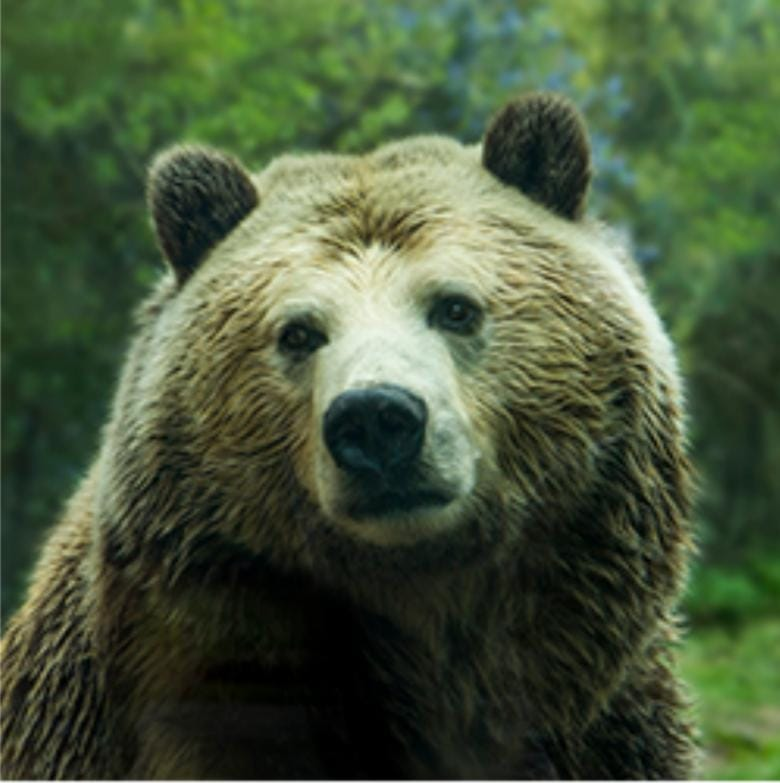

The Brown Bear
The brown bear (Ursus arctos) is native to parts of northern Eurasia and North America.
Its conservation status is currently "Least Concern." There are many subspecies within
the brown bear species, including the Atlas bear and the Himalayan brown bear.
update list
Learn More
Here are some bear species:
- Arctos
- Collarus
- Horribilis
- black Bears
- Nelsoni(extinct)
The following countries hava the largest populations of brown bears:
- Russia
- United States
- Canada
- Saudi
An ordered list: - foo
- bar
- baz
